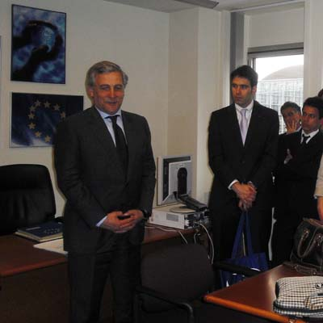

Volver a Noticias
11/04/11 El Vicepresidente de la Comisión Europea Antonio Tajani recibió al Máster del Real Instituto de Estudios Europeos
 El día 5 de abril el Vicepresidente de la Comisión Europea, comisario de Industria y Espíritu Emprendedor, Antonio Tajani, recibió en Estrasburgo a la promoción Príncipe Felipe del Programa Máster del Real Instituto de Estudios Europeos, tras su reunión con el filántropo Bill Gates.
En la misma jornada los integrantes del Máster mantuvieron sesiones de trabajo con la Secretaria General Adjunta del Consejo de Europa, así como con otras personalidades como Jaime Mayor Oreja, Juan Fernando López Aguilar, Carlos Iturgaiz o el Representante de España ante el Consejo de Europa.
El Real Instituto de Estudios Europeos se encuentra celebrando su 25 aniversario, realizó el día anterior sesiones de trabajo en el Tribunal de Justicia de la Unión Europea y Banco Europeo de Inversiones y posteriormente en Bruselas en el Consejo y la Comisión Europea y en Fráncfort en el Banco Central Europeo.
|